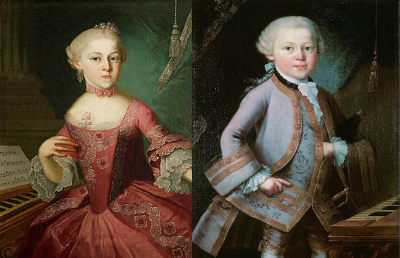

Still 0 recognition
Women had a very limited role in public musical life. Many of them received musical training, but usually as a private activity, not as a profession. Some female composers managed to publish works or perform in aristocratic circles, but their recognition was limited and their presence on major stages was very small.
- Maria Anna Mozart (1751-1829): older sister of Wolfgang Amadeus Mozart. She was a talented harpsichordist and composer who wrote important works.
- Anna Amalia de Prusia (1723-1787): princess and patron of the arts. She was a notable composer for harpsichord and violin and an important music collector.
- Maddalena Laura Lombardini Sirmen (1744-1812): Viennese composer and pianist, protected by Haydn, known for her concertos and operas.
- Marianne von Martínez (1744-1812): Viennese composer and pianist, protected by Haydn, known for her concertos and operas.
- Maria Teresa Agnesi (1720-1793): from Milan, she was an outstanding harpsichordist and composer of operas and instrumental music.
- Josepha Barbara Auernhammer (1758-1820): Viennese pianist and composer. She was an important musical figure in her time and was mentioned by Goethe.
- Maria Antonia Walpurgis (1724-1780): Bavarian princess and composer who wrote operas and chamber music and played a key role at court.
- Elisabetta de Gambarini (1730-1779): from London, she was an organist, harpsichordist, singer, conductor and composer.
Maria Anna Mozart & W.A. Mozart
